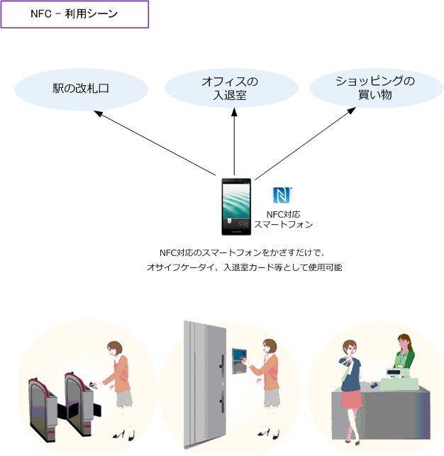
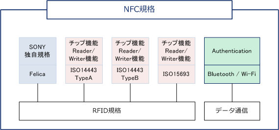
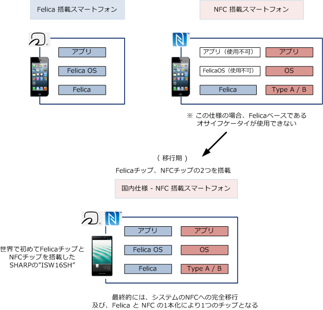
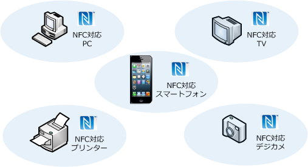

NFC
NFCとは
NFC（Near Field Communication）は 10cm程度の至近距離でデータ通信する無線通信の標準規格の1つ。 NFCは非接触型ICカードのための無線通信技術である「FelicaやMifare」の方式をもとに策定されています。 NFC対応のICカードでは、アンテナが電波を受信する際の発生した電力により、通信とデータの書き換えが 可能であり電池や電源が不要です。従って非接触ICカードの方では電源なしでもかざすだけで通信できます。

※ その他、NFCのICラベルが貼られたポスターなどにNFC搭載のスマートフォンをかざせば、クーポンなどの情報取得なども可能。

| NFCの周波数帯 | NFCの通信速度 | NFCの無線到達距離 | 策定元の技術 | NFCの使用例 |
|---|---|---|---|---|
| 13.56MHz | 100～400Kbps | 10cm程度 | Felica、Mifare | ICカード、携帯、スマートフォン |
NFC - 誕生の経緯、過渡期の対策
NFCのイメージ図を見ると、Felicaで十分ではないかと思うかもしれませんが、ソニーが開発したFelicaでは 日本とアジアに普及しており、欧米で普及しているのはNXPセミコンダクターズが開発したMifareとなるが FelicaとMifareは互換性がありません。そこで両者のインターフェースを統一するためにNFCが生まれました。
NFCの場合は、カードはFeliCaよりも安く仕入れられる上、システム維持コストも安くなる可能性が高くて、 コストの優位性もあり、今後はFelicaベースで作られてきた多くのシステムが段階的にNFCに移行する予定。 NFCがFelicaとMifareの両方式に上位互換があるので誤解されがちですが、NFCチップだけ搭載したスマート フォンでは、Felicaベースのオサイフケータイの決済はできません。従って移行段階では2つのチップが必要。

NFCの特徴
NFCでは「かざす」というアクションだけで簡単にデータを送受信できることが最大の特徴です。NFCを 搭載したスマートフォンをNFCを搭載したプリンターにかざせば撮影した写真をプリントアウトできたり、 NFCを搭載したTVにかざせば、動画をテレビに映し出したりすることができます。

NFC - 端末間通信機能（P2P）
紹介した非接触型のICカードを利用した「カードエミュレーション機能やリーダーライター機能」以外に 端末間通信機能（P2P）があります。これはNFC搭載の機器同士をかざす事だけで、メール、電話帳、画像、 スケジュール、XMLデータなどをスムーズに認証とファイル交換できます。ただし大容量のデータを送受信 する際には、ペアリングと認証だけをNFCで行い、実際のデータ転送は別の高速な通信規格で実行させます。
通信だけを別の高速規格に引き継ぐ事をハンドオーバーと言います。ハンドオーバーには2種類があります。 ・ Bluetoothハンドオーバー ・ Wi-Fiハンドオーバー